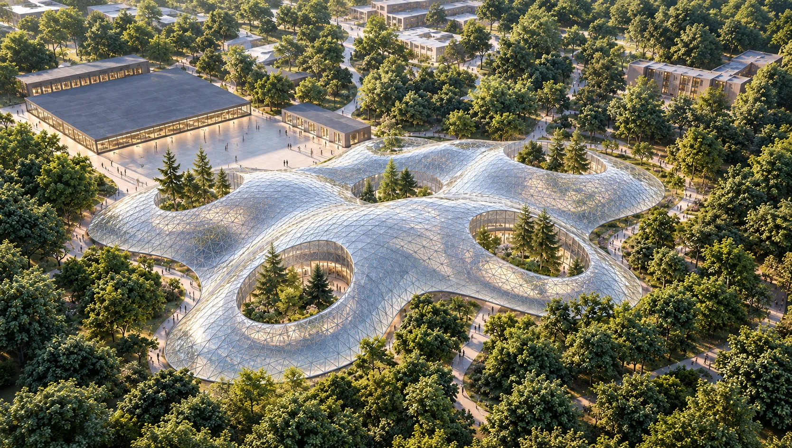
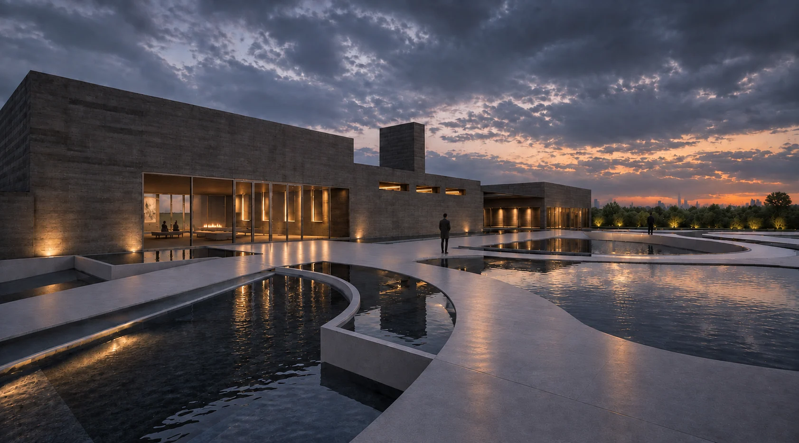
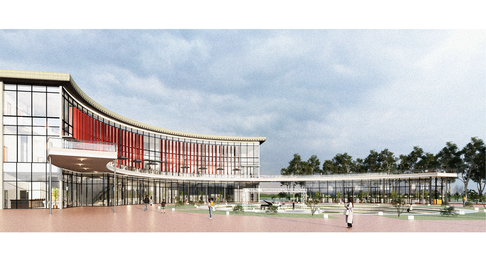

Change–Chance

[...A former battery factory reimagined as a living ecological landscape, where education, exploration, and environmental awareness become catalysts for reconnecting people with nature...]

[...A former battery factory reimagined as a living ecological landscape, where education, exploration, and environmental awareness become catalysts for reconnecting people with nature...]

[...The project proposes a new mausoleum and crematorium for Mount Hope Cemetery in Raleigh, North Carolina. Designed as a total precast concrete building, it integrates structure, enclosure, and ceremonial spaces while exploring long-span UHPC systems and daylighting strategies...]

[...An incubator where education, research, and industry converge; transforming knowledge into collaboration, experimentation, and real-world innovation...]

[...A performing arts center shaped around gathering, movement, and public experience, where architecture extends beyond the building to create a continuous relationship between performance, landscape, and community...]